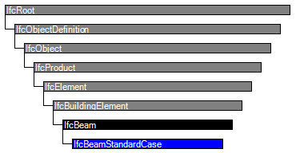
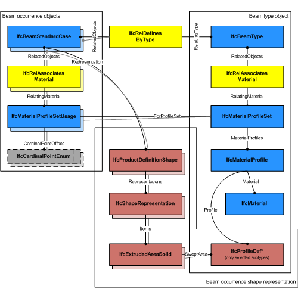
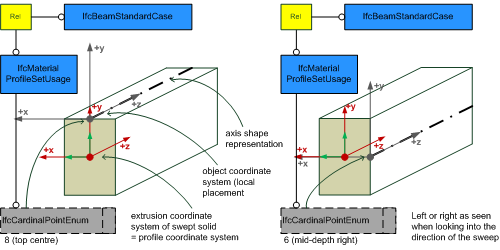
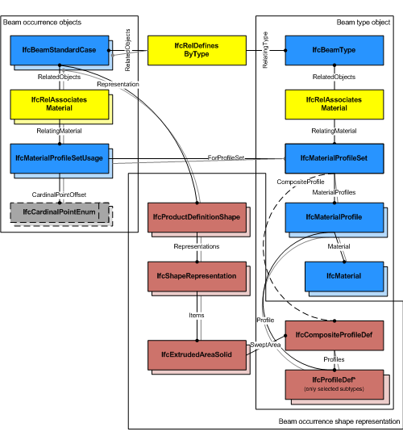
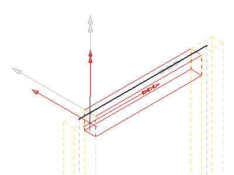
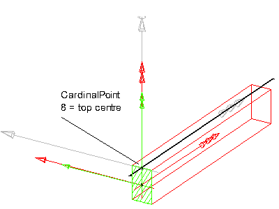
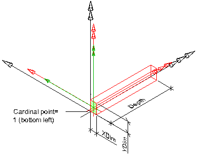
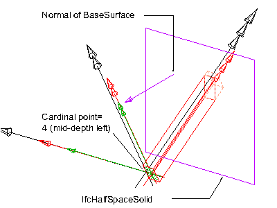

Natural language names
 | Balken / Unterzug - Standard |
 | Beam Standard Case |
 | Poutre standard |
| Balken / Unterzug - Standard |
| Beam Standard Case |
| Poutre standard |
| Item | SPF | XML | Change | Description | IFC2x3 to IFC4 |
|---|---|---|---|---|
| IfcBeamStandardCase | ADDED |
The standard beam, IfcBeamStandardCase, defines a beam with certain constraints for the provision of material usage, parameters and with certain constraints for the geometric representation. The IfcBeamStandardCase handles all cases of beams, that:
NOTE View definitions and implementer agreements may further constrain the applicable geometry types, e.g. by excluding tapering from an IfcBeamStandardCase implementation.
HISTORY New entity in IFC4.
Geometric Representations
The geometric representation of IfcBeamStandardCase is defined using the following multiple shape representations for its definition:
NOTE It is invalid to exchange a 'SurfaceModel', 'Brep', or 'MappedRepresentation' representation for the 'Body' shape representation of an IfcBeamStandardCase.
| Rule | Description |
|---|---|
| HasMaterialProfileSetUsage | A valid instance of IfcBeamStandardCase relies on the provision of an IfcMaterialProfileSetUsage. |

| # | Attribute | Type | Cardinality | Description | C |
|---|---|---|---|---|---|
| IfcRoot | |||||
| 1 | GlobalId | IfcGloballyUniqueId | [1:1] | Assignment of a globally unique identifier within the entire software world. | X |
| 2 | OwnerHistory | IfcOwnerHistory | [0:1] |
Assignment of the information about the current ownership of that object, including owning actor, application, local identification and information captured about the recent changes of the object,
NOTE only the last modification in stored - either as addition, deletion or modification. | X |
| 3 | Name | IfcLabel | [0:1] | Optional name for use by the participating software systems or users. For some subtypes of IfcRoot the insertion of the Name attribute may be required. This would be enforced by a where rule. | X |
| 4 | Description | IfcText | [0:1] | Optional description, provided for exchanging informative comments. | X |
| IfcObjectDefinition | |||||
| HasAssignments | IfcRelAssigns @RelatedObjects | S[0:?] | Reference to the relationship objects, that assign (by an association relationship) other subtypes of IfcObject to this object instance. Examples are the association to products, processes, controls, resources or groups. | X | |
| Nests | IfcRelNests @RelatedObjects | S[0:1] | References to the decomposition relationship being a nesting. It determines that this object definition is a part within an ordered whole/part decomposition relationship. An object occurrence or type can only be part of a single decomposition (to allow hierarchical strutures only). | X | |
| IsNestedBy | IfcRelNests @RelatingObject | S[0:?] | References to the decomposition relationship being a nesting. It determines that this object definition is the whole within an ordered whole/part decomposition relationship. An object or object type can be nested by several other objects (occurrences or types). | X | |
| HasContext | IfcRelDeclares @RelatedDefinitions | S[0:1] | References to the context providing context information such as project unit or representation context. It should only be asserted for the uppermost non-spatial object. | X | |
| IsDecomposedBy | IfcRelAggregates @RelatingObject | S[0:?] | References to the decomposition relationship being an aggregation. It determines that this object definition is whole within an unordered whole/part decomposition relationship. An object definitions can be aggregated by several other objects (occurrences or parts). | X | |
| Decomposes | IfcRelAggregates @RelatedObjects | S[0:1] | References to the decomposition relationship being an aggregation. It determines that this object definition is a part within an unordered whole/part decomposition relationship. An object definitions can only be part of a single decomposition (to allow hierarchical strutures only). | X | |
| HasAssociations | IfcRelAssociates @RelatedObjects | S[0:?] | Reference to the relationship objects, that associates external references or other resource definitions to the object.. Examples are the association to library, documentation or classification. | X | |
| IfcObject | |||||
| 5 | ObjectType | IfcLabel | [0:1] |
The type denotes a particular type that indicates the object further. The use has to be established at the level of instantiable subtypes. In particular it holds the user defined type, if the enumeration of the attribute PredefinedType is set to USERDEFINED.
| X |
| IsDeclaredBy | IfcRelDefinesByObject @RelatedObjects | S[0:1] | Link to the relationship object pointing to the declaring object that provides the object definitions for this object occurrence. The declaring object has to be part of an object type decomposition. The associated IfcObject, or its subtypes, contains the specific information (as part of a type, or style, definition), that is common to all reflected instances of the declaring IfcObject, or its subtypes. | X | |
| Declares | IfcRelDefinesByObject @RelatingObject | S[0:?] | Link to the relationship object pointing to the reflected object(s) that receives the object definitions. The reflected object has to be part of an object occurrence decomposition. The associated IfcObject, or its subtypes, provides the specific information (as part of a type, or style, definition), that is common to all reflected instances of the declaring IfcObject, or its subtypes. | X | |
| IsTypedBy | IfcRelDefinesByType @RelatedObjects | S[0:1] | Set of relationships to the object type that provides the type definitions for this object occurrence. The then associated IfcTypeObject, or its subtypes, contains the specific information (or type, or style), that is common to all instances of IfcObject, or its subtypes, referring to the same type. | X | |
| IsDefinedBy | IfcRelDefinesByProperties @RelatedObjects | S[0:?] | Set of relationships to property set definitions attached to this object. Those statically or dynamically defined properties contain alphanumeric information content that further defines the object. | X | |
| IfcProduct | |||||
| 6 | ObjectPlacement | IfcObjectPlacement | [0:1] | Placement of the product in space, the placement can either be absolute (relative to the world coordinate system), relative (relative to the object placement of another product), or constraint (e.g. relative to grid axes). It is determined by the various subtypes of IfcObjectPlacement, which includes the axis placement information to determine the transformation for the object coordinate system. | X |
| 7 | Representation | IfcProductRepresentation | [0:1] | Reference to the representations of the product, being either a representation (IfcProductRepresentation) or as a special case a shape representations (IfcProductDefinitionShape). The product definition shape provides for multiple geometric representations of the shape property of the object within the same object coordinate system, defined by the object placement. | X |
| ReferencedBy | IfcRelAssignsToProduct @RelatingProduct | S[0:?] | Reference to the IfcRelAssignsToProduct relationship, by which other products, processes, controls, resources or actors (as subtypes of IfcObjectDefinition) can be related to this product. | X | |
| IfcElement | |||||
| 8 | Tag | IfcIdentifier | [0:1] | The tag (or label) identifier at the particular instance of a product, e.g. the serial number, or the position number. It is the identifier at the occurrence level. | X |
| FillsVoids | IfcRelFillsElement @RelatedBuildingElement | S[0:1] | Reference to the IfcRelFillsElement Relationship that puts the element as a filling into the opening created within another element. | X | |
| ConnectedTo | IfcRelConnectsElements @RelatingElement | S[0:?] | Reference to the element connection relationship. The relationship then refers to the other element to which this element is connected to. | X | |
| IsInterferedByElements | IfcRelInterferesElements @RelatedElement | S[0:?] | Reference to the interference relationship to indicate the element that is interfered. The relationship, if provided, indicates that this element has an interference with one or many other elements.
NOTE There is no indication of precedence between IsInterferedByElements and InterferesElements. | X | |
| InterferesElements | IfcRelInterferesElements @RelatingElement | S[0:?] | Reference to the interference relationship to indicate the element that interferes. The relationship, if provided, indicates that this element has an interference with one or many other elements.
NOTE There is no indication of precedence between IsInterferedByElements and InterferesElements. | X | |
| HasProjections | IfcRelProjectsElement @RelatingElement | S[0:?] | Projection relationship that adds a feature (using a Boolean union) to the IfcBuildingElement. | X | |
| ReferencedInStructures | IfcRelReferencedInSpatialStructure @RelatedElements | S[0:?] | Reference relationship to the spatial structure element, to which the element is additionally associated. This relationship may not be hierarchical, an element may be referenced by zero, one or many spatial structure elements. | X | |
| HasOpenings | IfcRelVoidsElement @RelatingBuildingElement | S[0:?] | Reference to the IfcRelVoidsElement relationship that creates an opening in an element. An element can incorporate zero-to-many openings. For each opening, that voids the element, a new relationship IfcRelVoidsElement is generated. | X | |
| IsConnectionRealization | IfcRelConnectsWithRealizingElements @RealizingElements | S[0:?] | Reference to the connection relationship with realizing element. The relationship, if provided, assigns this element as the realizing element to the connection, which provides the physical manifestation of the connection relationship. | X | |
| ProvidesBoundaries | IfcRelSpaceBoundary @RelatedBuildingElement | S[0:?] | Reference to space boundaries by virtue of the objectified relationship IfcRelSpaceBoundary. It defines the concept of an element bounding spaces. | X | |
| ConnectedFrom | IfcRelConnectsElements @RelatedElement | S[0:?] | Reference to the element connection relationship. The relationship then refers to the other element that is connected to this element. | X | |
| ContainedInStructure | IfcRelContainedInSpatialStructure @RelatedElements | S[0:1] | Containment relationship to the spatial structure element, to which the element is primarily associated. This containment relationship has to be hierachical, i.e. an element may only be assigned directly to zero or one spatial structure. | X | |
| HasCoverings | IfcRelCoversBldgElements @RelatingBuildingElement | S[0:?] | Reference to IfcCovering by virtue of the objectified relationship IfcRelCoversBldgElement. It defines the concept of an element having coverings associated. | X | |
| IfcBuildingElement | |||||
| IfcBeam | |||||
| 9 | PredefinedType | IfcBeamTypeEnum | [0:1] |
Predefined generic type for a beam that is specified in an enumeration. There may be a property set given specificly for the predefined types.
NOTE The PredefinedType shall only be used, if no IfcBeamType is assigned, providing its own IfcBeamType.PredefinedType. | X |
| IfcBeamStandardCase | |||||
Material Profile Set Usage
The Material Profile Set Usage concept applies to this entity.
The IfcBeamStandardCase defines in addition that the IfcBeamType should have a unique IfcMaterialProfileSet, that is referenced by the IfcMaterialProfileSetUsage that is assigned to all occurrences of this IfcBeamType.
 |
EXAMPLE Figure 190 illustrates assignment of IfcMaterialProfileSetUsage and IfcMaterialProfileSet to the IfcBeamStandardCase as the beam occurrence and to the IfcBeamType. The same IfcMaterialProfileSet shall be shared by many occurrences of IfcMaterialProfileSetUsage. This relationship shall be consistent to the relationship between the IfcBeamType and the IfcBeamStandardCase. |
Figure 190 — Beam profile usage |
 |
EXAMPLE Figure 191 illustrates alignment of cardinal points. NOTE It has to be guaranteed that the use of IfcCardinalPointEnum is consistent to the placement of the extrusion body provided by IfcExtrudedAreaSolid.Position NOTE The cardinal points 8 (top centre) and 6 (mid-depth right) are assigned according to the definition at IfcCardinalPointReference |
Figure 191 — Beam cardinal points |
 |
EXAMPLE Figure 192 illustrates assignment of a composite profile by using IfcCompositeProfile for geometric representation and several IfcMaterialProfile's within the IfcMaterialProfileSet. |
Figure 192 — Beam composite profiles |
Product Local Placement
The Product Local Placement concept applies to this entity as shown in Table 87.
| ||||||||||||
Table 87 — IfcBeamStandardCase Product Local Placement |
The following restriction is imposed:
Axis 3D Geometry
The Axis 3D Geometry concept applies to this entity as shown in Table 88.
| ||||||||
Table 88 — IfcBeamStandardCase Axis 3D Geometry |
The following additional constraints apply to the 'Axis' representation, if the 'Body' shape representation has the RepresentationType : 'SweptSolid':
|
 |
EXAMPLE As shown in Figure 76, the axis shall be defined along the z axis of the object coordinate system. The axis representation can be used to represent the system length of a beam that may extent the body length of the beam. |
Figure 192 — Beam axis representation |
|
 |
EXAMPLE As shown in Figure 77, the axis representation shall be used to represent the cardinal point as the offset between the 'Axis' and the extrusion path of the beam. The extrusion path is provided as IfcExtrudedAreaSolid.ExtrudedDirection and should be parallel to the 'Axis' and the z axis. It has to be guaranteed that the value provided by IfcMaterialProfileSetUsage.CardinalPoint is consistent to the IfcExtrudedAreaSolid.Position. |
Figure 193 — Beam axis cardinal point |
Body SweptSolid Geometry
The Body SweptSolid Geometry concept applies to this entity.
The following additional constraints apply to the 'SweptSolid' representation:
Figure 193 illustrates a standard geometric representation with cardinal point applied as 1 (bottom left).
The following interpretation of dimension parameter applies for rectangular beams with linear extrusions:
The following interpretation of dimension parameter applies for circular beams:
 |
Figure 193 — Beam body extrusion |
Body AdvancedSweptSolid Geometry
The Body AdvancedSweptSolid Geometry concept applies to this entity.
The following additional constraints apply to the 'AdvancedSweptSolid' representation type:
NOTE View definitions and implementer agreement can further constrain the allowed swept solid types.
Body Clipping Geometry
The Body Clipping Geometry concept applies to this entity.
The following constraints apply to the 'Clipping' representation:
Figure 194 illustrates a 'Clipping' geometric representation with use of IfcBooleanClippingResult between an IfcExtrudedAreaSolid and an IfcHalfSpaceSolid to create a clipped body, with cardinal point applied as 4 (mid-depth left)
 |
Figure 194 — Beam body clipping |
| # | Concept | Model View |
|---|---|---|
| IfcRoot | ||
| Software Identity | Common Use Definitions | |
| Revision Control | Common Use Definitions | |
| IfcObject | ||
| Object Occurrence Predefined Type | Common Use Definitions | |
| IfcElement | ||
| Box Geometry | Common Use Definitions | |
| FootPrint Geometry | Common Use Definitions | |
| Body SurfaceOrSolidModel Geometry | Common Use Definitions | |
| Body SurfaceModel Geometry | Common Use Definitions | |
| Body Tessellation Geometry | Common Use Definitions | |
| Body Brep Geometry | Common Use Definitions | |
| Body AdvancedBrep Geometry | Common Use Definitions | |
| Body CSG Geometry | Common Use Definitions | |
| Mapped Geometry | Common Use Definitions | |
| Mesh Geometry | Common Use Definitions | |
| IfcBuildingElement | ||
| Surface 3D Geometry | Common Use Definitions | |
| IfcBeam | ||
| Object Typing | Common Use Definitions | |
| Property Sets for Objects | Common Use Definitions | |
| Quantity Sets | Common Use Definitions | |
| Spatial Containment | Common Use Definitions | |
| Element Composition | Common Use Definitions | |
| Material Profile Set | Common Use Definitions | |
| Product Assignment | Common Use Definitions | |
| IfcBeamStandardCase | ||
| Material Profile Set Usage | Common Use Definitions | |
| Product Local Placement | Common Use Definitions | |
| Axis 3D Geometry | Common Use Definitions | |
| Body SweptSolid Geometry | Common Use Definitions | |
| Body AdvancedSweptSolid Geometry | Common Use Definitions | |
| Body Clipping Geometry | Common Use Definitions | |
<xs:element name="IfcBeamStandardCase" type="ifc:IfcBeamStandardCase" substitutionGroup="ifc:IfcBeam" nillable="true"/>
<xs:complexType name="IfcBeamStandardCase">
<xs:complexContent>
<xs:extension base="ifc:IfcBeam"/>
</xs:complexContent>
</xs:complexType>
ENTITY IfcBeamStandardCase
SUBTYPE OF (IfcBeam);
WHERE
HasMaterialProfileSetUsage : SIZEOF (QUERY(temp <* USEDIN(SELF, 'IFCKERNEL.IFCRELASSOCIATES.RELATEDOBJECTS') |
('IFCPRODUCTEXTENSION.IFCRELASSOCIATESMATERIAL' IN TYPEOF(temp)) AND
('IFCMATERIALRESOURCE.IFCMATERIALPROFILESETUSAGE' IN TYPEOF(temp.RelatingMaterial))
)) = 1;
END_ENTITY;
 Instance diagram
Instance diagram Link to this page
Link to this page